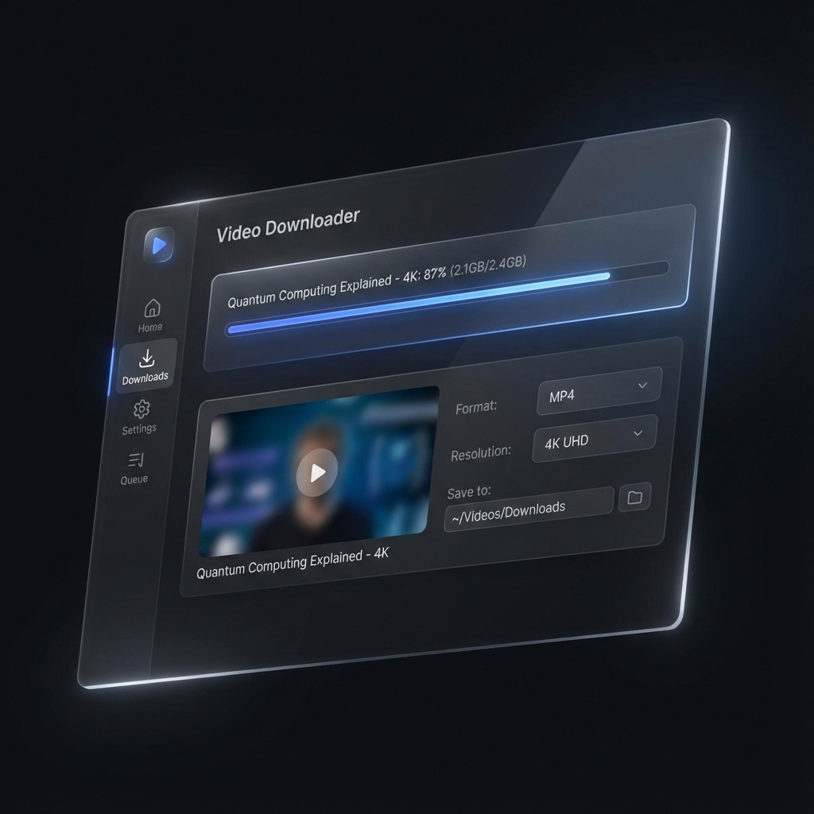

Open Source Utility | Electron & Node.js
YTDLN-OPEN
About the project
YTDLN-OPEN is a free and open-source desktop video/audio downloader powered by yt-dlp, ffmpeg, and Electron. It supports downloading from over 1000 websites with a clean, modern interface.
Featuring aria2c acceleration for high-speed multi-connection transfers, it includes advanced capabilities like playlist support, format conversion, metadata preservation, and cross-platform compatibility (Windows, macOS, Linux).
